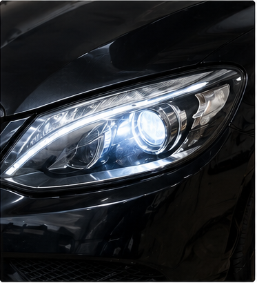
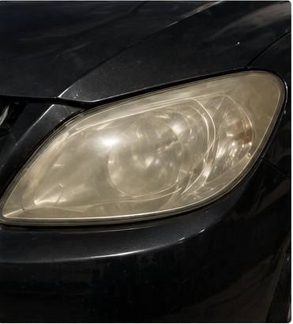
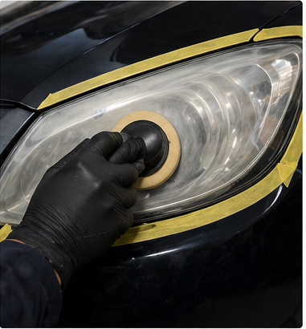
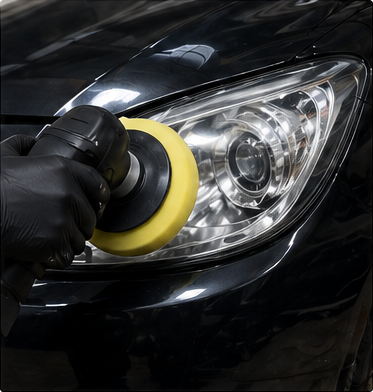
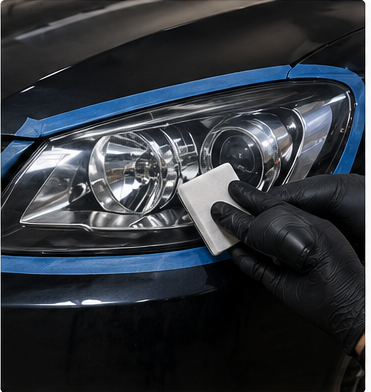
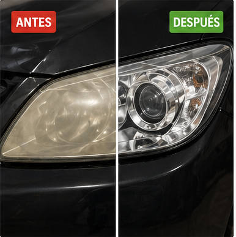

Los faros modernos ya no se fabrican principalmente en vidrio, sino en policarbonato, un polímero técnico que ofrece alta resistencia al impacto, menor peso y mayor libertad de diseño aerodinámico. Sin embargo, este material presenta una debilidad importante: su superficie es sensible a la radiación ultravioleta, a la oxidación, a la abrasión ambiental y a la pérdida progresiva de transparencia. Cuando un faro se torna amarillento u opaco, no solo se afecta la estética del vehículo; también se reduce la eficiencia lumínica y la seguridad durante la conducción nocturna.

Contenido del artículo
Capítulo 1: Por qué se opacan los faros
La opacidad de un faro no aparece de forma repentina. Es el resultado de un proceso gradual de degradación superficial. El policarbonato original suele venir protegido por una capa transparente con inhibidores UV. Esta capa actúa como barrera contra radiación solar, contaminantes atmosféricos, lluvia ácida, partículas abrasivas y variaciones térmicas. Cuando esa protección se erosiona o se oxida, el material base queda expuesto y comienza a perder claridad.
Foto-oxidación y pérdida de transmitancia
El fenómeno principal detrás del amarillamiento es la foto-oxidación. La radiación ultravioleta aporta energía suficiente para alterar enlaces moleculares en la superficie del polímero. Esto genera cambios químicos que modifican la forma en que la luz atraviesa el material. En vez de pasar de manera limpia y controlada, parte del flujo luminoso se dispersa dentro de una superficie irregular, amarillenta y microfisurada.
En términos prácticos, el faro deja de comportarse como una lente eficiente. La luz emitida por la bombilla o módulo LED se atenúa, se dispersa y pierde alcance útil. Esto afecta la visibilidad del conductor y también la capacidad del vehículo para ser visto por otros usuarios de la vía.

Capítulo 2: Diagnóstico del estado óptico
Antes de restaurar un faro, es necesario diagnosticar su condición real. No todos los faros opacos requieren el mismo nivel de intervención. Algunos presentan oxidación superficial leve; otros tienen grietas, daño interno, humedad, pérdida de sellado o deterioro estructural del lente. Si el daño está por dentro o si existe fisura profunda, el pulido externo puede mejorar la apariencia, pero no resolverá completamente el problema óptico.
El diagnóstico debe considerar cuatro aspectos principales: coloración del lente, grado de opacidad, presencia de rayaduras y estado del sellado perimetral. También conviene revisar si existe condensación interna, ya que la humedad dentro del faro puede indicar fallo de empaque, respiraderos obstruidos o fisuras en la carcasa.
Capítulo 3: Lijado técnico y corrección superficial
El lijado es la etapa que más define la calidad de la restauración. Su objetivo no es simplemente “rayar” el faro, sino remover de manera controlada la capa oxidada y nivelar la superficie hasta alcanzar una base homogénea. Para lograrlo se utilizan lijas de diferente granulometría, trabajando de forma progresiva desde un corte más agresivo hacia un refinado más fino.
Lijado progresivo por granulometría
En una restauración técnica, se puede iniciar con granos medios cuando la oxidación es severa y avanzar hacia lijas finas para reducir las marcas de abrasión. El patrón de lijado debe ser ordenado, normalmente alternando direcciones entre una etapa y otra. Esto permite identificar cuándo se han eliminado las marcas previas y evita dejar valles microscópicos que luego serán difíciles de corregir durante el pulido.
La lubricación con agua reduce fricción, evacua residuos y controla temperatura. Este punto es fundamental porque el policarbonato puede deformarse o sensibilizarse si se trabaja con exceso de calor. Una restauración profesional exige paciencia, inspección constante y limpieza entre etapas para no arrastrar partículas abrasivas gruesas hacia fases de refinado.

Capítulo 4: Pulido óptico del policarbonato
Después del lijado, la superficie queda homogénea pero mate. El pulido tiene la función de reducir la micro-rugosidad generada por las lijas finas y devolver claridad al lente. Para ello se emplean compuestos abrasivos de menor tamaño, pads de espuma o microfibra y una máquina de pulido con velocidad controlada. El objetivo es refinar la superficie sin sobrecalentar el material.
Control de temperatura y acabado transparente
El pulido de faros requiere una gestión térmica cuidadosa. A diferencia de la pintura automotriz, el policarbonato puede reaccionar de forma más sensible al calor concentrado. Una presión excesiva, una velocidad alta o permanecer demasiado tiempo en un mismo punto puede generar deformaciones, marcas o pérdida de uniformidad visual.
Cuando el proceso se realiza correctamente, la superficie comienza a recuperar transparencia de forma progresiva. La luz deja de dispersarse sobre un plano mate y vuelve a transmitirse de manera más ordenada. Esta recuperación visual debe completarse con limpieza final y eliminación de residuos de compuesto antes de aplicar cualquier protección.

Capítulo 5: Sellado y protección UV
Una restauración sin sellado es incompleta. Al lijar y pulir, se elimina la capa deteriorada, pero también queda expuesto el policarbonato a una nueva fase de degradación si no se protege. Por eso, el sellado final es la diferencia entre una mejora temporal y una restauración duradera.
Recubrimientos protectores y barrera ultravioleta
El sellador o recubrimiento protector crea una película transparente que reduce la exposición directa del policarbonato frente a radiación UV, oxígeno, humedad y contaminantes. Existen varias opciones: barnices específicos para faros, selladores poliméricos, coatings cerámicos o películas protectoras. La elección depende del presupuesto, durabilidad esperada y condiciones de uso del vehículo.
El punto crítico es que la superficie debe estar completamente limpia antes de aplicar el protector. Cualquier residuo de pulimento, grasa o humedad puede afectar la adherencia del recubrimiento y reducir su vida útil. Por ello, la preparación previa al sellado es tan importante como el producto utilizado.

Capítulo 6: Resultados y mantenimiento preventivo
Una restauración correctamente ejecutada mejora la apariencia frontal del vehículo, aumenta la claridad del lente y permite recuperar parte importante del rendimiento lumínico perdido. Sin embargo, el resultado final depende del estado inicial del faro, de la profundidad del daño y de la calidad del sellado aplicado. Si el lente presenta microgrietas internas o daño estructural severo, la restauración puede mejorar la superficie externa, pero no devolver completamente la condición original.
Comparativa antes y después
La diferencia entre un faro oxidado y uno restaurado se observa tanto en estética como en función. El lente recupera transparencia, el haz de luz se proyecta con mayor definición y la apariencia del vehículo mejora significativamente. Aun así, el mantenimiento posterior es clave para que el resultado no se degrade rápidamente.
Para conservar el acabado, se recomienda lavar los faros con productos suaves, evitar limpiadores abrasivos, reaplicar protección cuando sea necesario y estacionar bajo sombra siempre que sea posible. La prevención es más económica y eficiente que esperar a que el policarbonato vuelva a degradarse.
